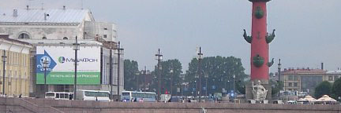

Normally clicking on any spot on a linked graphic is the same as clicking on another. One link per graphic is the rule. But with use maps a graphic contains more than one link. Clicking on different parts link to different files.
